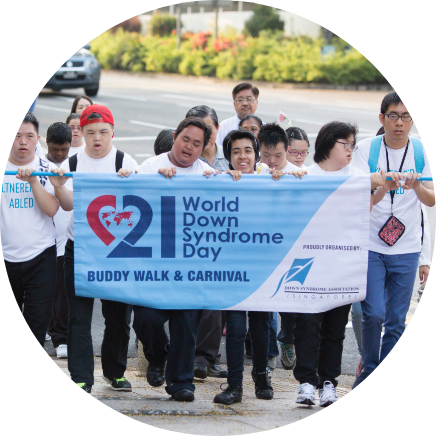

Find out more about Down syndrome
About Down syndrome
What causes Down syndrome?
Down syndrome is a genetic condition caused by the
presence of an extra chromosome 21. A baby born with
Down syndrome has three copies of chromosome 21
instead of the usual two. As yet it is not known what
causes the presence of an extra chromosome 21. It can
come from either the mother of father.
There is, however, a definite link with advanced
maternal age for reasons yet unknown. However, most
babies with Down syndrome are born to women under the
age of 35, as younger women have higher fertility rates.
Down syndrome occurs in all races, social classes and in all
countries throughout the world. It can happen to anyone.
When was Down syndrome discovered?
People with Down syndrome have always existed.
However, it was not until 1886 that the English doctor,
John Langdon Down published a description of the
condition, which subsequently took his name.
In 1959, Professor Jérôme Lejeune proved that Down
syndrome is a chromosomal irregularity. Instead of 46
chromosomes usually present in each cell, Lejeune
noted 47 in the cells of people with Down syndrome.
It was later determined that this additional chromosomal
material results in the physical characteristics associated
With the condition and the different course in development.
Our Mission
Develop Individuals with Down syndrome through lifelong learning and social integration.
Support families through specialist services, information and services.
Advocate for equal opportunities, quality of life and their contribution to society.
Our Vision
To be the Centre of Excellence for individuals with Down syndrome, their families and the community.
OUR STORY
-
Our Humble Beginnings Early 1995A group of parents of children with Down syndrome recognised that a great need existed in Singapore to support and educate families, professionals and the public about Down syndrome.
-
First Meeting 1 Oct 1995Out of a meeting held, the group was formed. Following May, the group organised and hosted with great success, the 2nd Asia Pacific Conference on Down syndrome.
-
Down Syndrome Association Sept 1996This achievement, coupled with enthusiasm and overwhelming support from parents, professionals and community members gave rise to the formal registration of the group.
-
Across International Borders 4 Jul 1997DSA(S) was awarded official recognition by the National Council of Social Serices on 4 July 1997. It is also now affilated to international bodies such as The International Federation of Down Syndrome and the Asia-Pacific Federation of Down syndrome, and regularly works with other Down syndrome associations worldwide..
-
Adult Enhancement Programme 2004The AEP is an existing skills-enhancement programme run by DSA(S) for persons with Down syndrome and/or Intellectual Disability aged 18 years and above.
The AEP adopts a person- and family-centred model in delivering a programme focused on functional life-skills. It takes into consideration the attained development stages of each adult learner and their aspirations. -
World Down Syndrome Day 2006World Down Syndrome Day is observed on 21 March every year.
On this day, people with Down syndrome and those who live and work with them throughout the world organise and participate in activities and events to raise public awareness and create a single global voice for advocating for the rights, inclusion and well being of people with Down syndrome. -
DSA Thrift Shop 2008The begining of SHOP@DSA21, a thriftshop by Down Syndrome Association (Singapore), selling donated and/or second-hand goods. Through this, young people with Down Syndrome learn working skills and gain social interaction. Find us at Telok Blangah Crescent Tuesdays and Fridays!
-
New Premise Junction 8 20132013 was an eventful year for Down Syndrome Association (Singapore) with our exciting move into bigger premises ingeniously designed especially for persons with Down syndrome by Belinda Huang of Arc Studio, setting a new milestone in its history of 17 years.
-
Infant Toddler Programme 2013The launch of Infant Toddler Programme, for infants and toddlers younger than 3 years old, who have Down syndrome. The programme is designed to help support families and caregivers, enhance the development and learning of infants and toddlers and to provide an opportunity for parents and their young children to learn together.
-
Our Lives Our Voices 2018Our Lives, Our Voices is a Self-Advocacy project which aims to empower people with intellectual & developmental disabilities. This exciting new project jointly organised by MINDS & Down Syndrome Association (Singapore) seeks to support you in expressing your feelings, empower you to speak up for yourself & share your life story with others and educate you about your rights
OUR TEAM
Patron
Mr. Tan Soo Khoon
Advisors
Assoc. Prof S. Vasoo
Dr. Balbir Singh
Specialist Advisors
Dr. Bhavani Siriam (Medical)
Ms. Christine Sekhon (Legal)
Chairperson
Mr. Ratnasbapathy Sivanandam
Deputy Chairperson
Ms. Li Shu Yun
Honorary Treasurer
Mr. Alex Yan
Honorary Secretary
Mr. Monica Kan
Members
Mr. Gopalan Nair
Mr. Gerard Lim
Mr. Arjun Chandrasekhar
Ms. Naveed Kamil Hasan
Ms. Tan Peck Joo
Mr. Chan Wing Git
Corporate Goverance
Code of Governance
The Code of Governance implemented in November 2007 requires that all IPCs and Charities
In Singapore comply and submit on-line the extent of compliance through the Governance
Evaluation Checklist developed by the Charity Council via the Charity Portal.
We are pleased to report that DSA(S) has complied with all the applicable guidelines of the
Code of Governance Evaluation Checklist for large charities with gross annual receipts of
$10 million or more; and IPCs with gross annual receipts of $200,000 and up to $10 million.
The DSA(S) Governance Evaluation Checklist for Enhanced Tier can be downloaded here.
Charity Transparency Framework
The Charity Transparency Framework (CTF) serves to hep charities enhance their disclosure
and governance practices. It is a scorecard for charities’ self-assessment purposes and is not
mandatory.
We are pleased to report that DSA(S) has adopted the Charity Transparency Framework
to enhance our disclosure and governance practices. The DSA(S) Charity Transparency
Scorecard can be downloaded here.